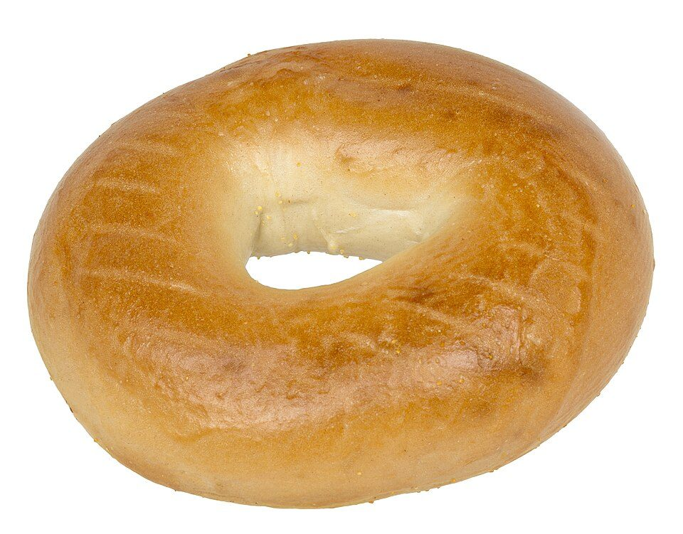

制作側の連想
セルフレジを、部位ごとの配置図にしてみる
このサイトは、レジ前に立つ機械を図にしたつもりで作りました。六つの部位に番号をふり、上の図と並べています。制作側の連想で、お店の理念・由来とは無関係です。実際の機器の仕様を示すものではなく、お店にセルフレジがあるという意味でもありません。
凡例
六つの部位
- 1表示画面金額や案内をうつす、タッチ操作の画面。
- 2読み取り窓商品のバーコードをかざす、小さな窓。
- 3計量台置いたものの重さをはかる、平らな台。
- 4袋かけ買い物袋をさげておくための、小さなフック。
- 5レシート口紙が出てくる、細い口。
- 6呼び出し灯てっぺんにそなえた、知らせるためのランプ。
ギャラリー(イメージ)
パンとコーヒー豆の写真





写真はパンやコーヒーのイメージです。お店のものではなく、お店で提供している商品を示すものでもありません。
ご案内
お店のこと(確認できたものだけ)
| 所在地 | 〒781-8121 高知県高知市葛島1丁目10-75 |
|---|---|
| 電話 | 準備中 |
| 営業時間 | 準備中 |
| 定休日 | 準備中 |
| ご予約 | 準備中 |
| 駐車場 | 準備中 |
| SNS | Instagram @mont_keeya |